Corner Cafe.
One order, from the counter to pickup.
An order-ahead experience for a rotating volunteer coffee team, designed around the work behind the counter—not just the ordering screen.
Independent project · Prototype, not yet field-tested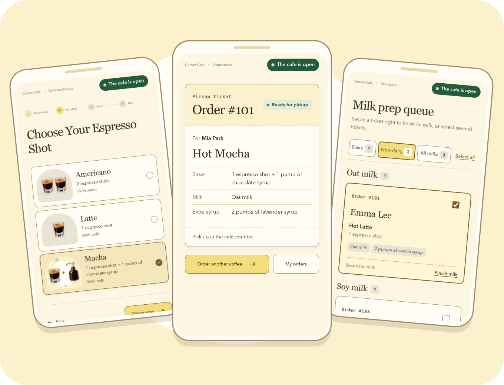
- My focus
- Product design & prototyping
- Context
- A five-person volunteer line
- Tools
- Figma, HTML/CSS/JS, TypeScript
- Approach
- PRD-led, AI-assisted build
Order a coffee. Or help make someone’s.
Corner Cafe has two sides: a guided ordering flow for customers and three focused stations for the coffee team. Both are available to explore in the demo.
Order a coffee.
- Enter. Pull the machine’s lever and choose a sign-in cup. Guests enter a first and last name; the simulated Church Center account already has a name.
- Choose your coffee. Pick hot or iced, then Americano, latte, or mocha. Shot counts are fixed, not another question to answer.
- Customize. The glass starts with espresso. Mocha also includes one pump of chocolate. Add up to six optional syrup pumps and choose a milk; Americano skips both steps.
- Submit. Review the visible recipe and place the order. The status screen shows it being prepared.
- Pick up. The ticket changes from Preparing to Ready for pickup. Reopen it from My orders.
Shortcut starts at guest name entry. Use a fictional name.
Pick a station. See what needs doing.
Enter the demo, choose Coffee Team, then select the role you are serving in.
Take a customer’s order or print selected cup labels in black on white.
Filter the queue by milk type. Steam milk for hot drinks or use cold milk for iced drinks. Finish one ticket or a batch.
Mark finished drinks ready for pickup. The customer’s ticket updates in another tab of the same browser.
Shortcut opens the role picker and supplies fictional orders if the queue is empty.
Switching demo paths restarts an unfinished order. Guest access to team stations is a prototype convenience, not production authorization.
The bottleneck wasn’t just the line.
Orders were spoken, written by hand, and passed along with the cup. Because espresso shots go in before milk, the shot-puller sits between the order-taker and the steamers. The steamers learn the milk type only when the cup reaches them.
That suggested a more useful problem than simply “put ordering on a phone”: information can move in parallel even when drink preparation must remain sequential.
- Verbal order + handwritten label
- Shot-puller receives the cup
- Steamer finally learns the milk type
- Mixer finishes the drink
- Customer places an order ahead
- Team views receive the recipe together
- Fresh preparation begins after arrival*
- Mixer marks ready and calls the name
*Arrival confirmation still needs to be specified and tested. Earlier information is not permission to make a drink before its customer arrives.
Not every person needed another screen.
Keep the shot-puller off the app.
The PRD excludes a dedicated shot-puller view: they already receive the order through the existing handoff. Another screen would not clearly improve the four goals.
Give the mixer ownership of “ready.”
The mixer was initially out of scope, then added because they own the moment a finished drink becomes ready for pickup. A concrete responsibility justified the interface.
Keep a human fallback.
The order-taker can order for someone who does not use the app. If printing fails, the visible recipe remains available for a handwritten label.
The customer builds a drink. The team gets a ticket.
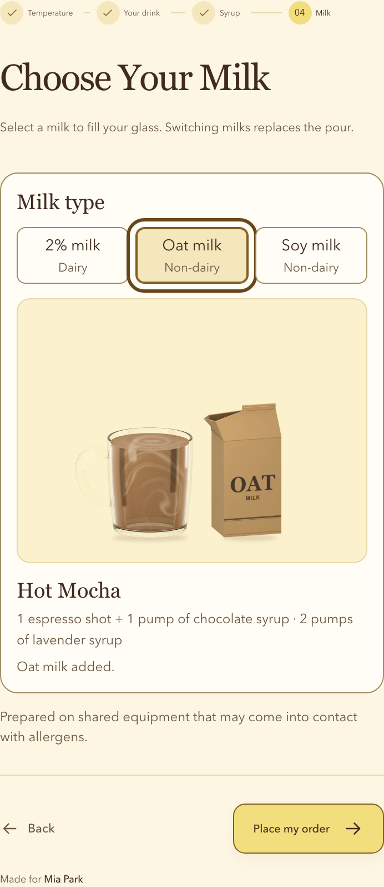
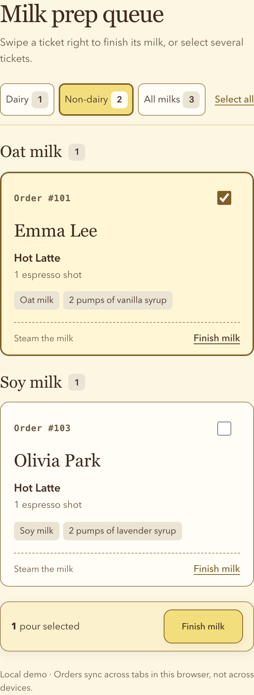
Full-panel captures from the coded prototype, using fictional demo orders. Sticky positioning is flattened only for capture so no controls are concealed.
Motion explains a change, not just a mood.
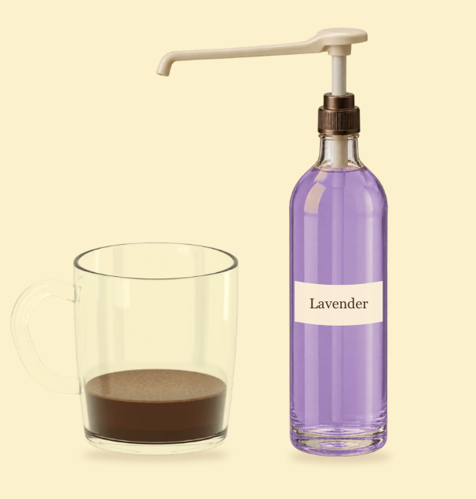
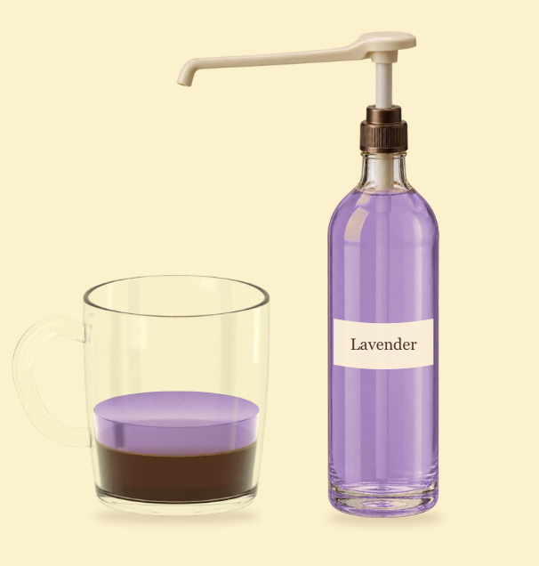
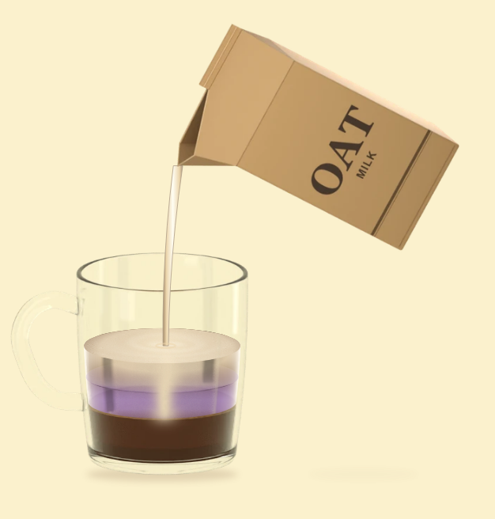
Fewer decisions, not more controls.
Shot count is fixed: two for an Americano, one for a latte or mocha. Americanos skip the syrup and milk steps entirely.
Ingredients carry forward.
The same clear mug or ribbed iced glass carries the recipe from syrup to milk. The pickup ticket distinguishes included chocolate from optional syrup.
Selection is explicit.
Both temperature choices start neutral. Only the selected card gains a butter-yellow field, checkmark, and small stars behind the drink.
Boundaries prevent accidental input.
Pumps stay between 0 and 6, and unavailable counter actions are disabled. Required name fields stop an incomplete order before submission.
Gestures have a visible alternative.
Volunteers can swipe a ticket or use Finish milk. They can also select a batch and finish the milk together.
Motion has a quieter equivalent.
Reduced-motion mode shows the completed ingredient state without animated pouring. Counts, labels, and selected states still communicate the result.
Color follows the task.
Buttercream frames the counter; ivory holds forms and order tickets. Machine yellow marks an action or selection. A forest-green badge means the café is open; a separate muted-green state identifies a drink ready for pickup. Status is written in words as well as color.
Emma Lee
Hot latte · 1 shot
Emma Lee
Hot latte · 1 shot
Emma Lee
Ready for pickup
Illustrative state anatomy: the order identity stays stable while selection and fulfillment change.
Make the intent visible in the token name.
| Value | Semantic intent | Code usage |
|---|---|---|
#FBF1CD | Counter and sidebar | var(--buttercream) |
#FFFDF5 | Ticket and input surface | var(--paper) |
#412B20 | Primary text | var(--ink) |
#F2DE7D | Primary action | var(--enamel) |
#245B3A | Open status · white text | var(--open) |
#E3ECDA | Ready for pickup | var(--ready-surface) |
background: var(--enamel);Try the prototype →The current Figma-to-CSS mapping is maintained manually, not an automated token pipeline. The app file uses local main components and instances; it does not require a published, paid-plan library.
The interaction is the evidence.
The coded prototype lets you place an order, prepare the milk, and mark the drink ready for pickup. The updated Figma design system documents the colors, type, and control states used in those screens.
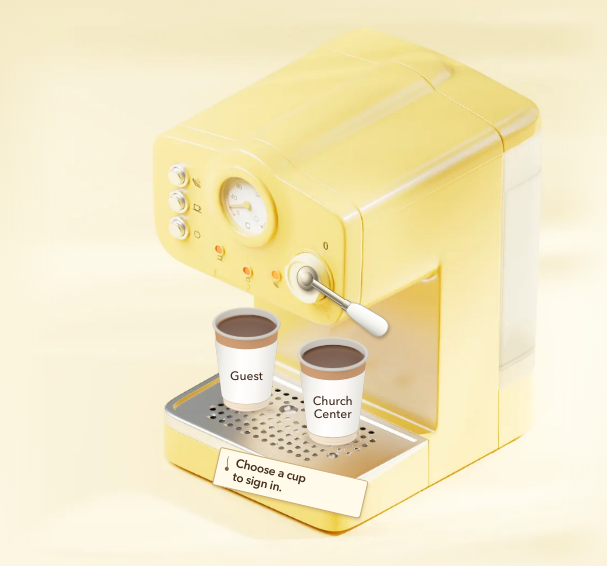
Pull the lever for the sign-in cups, then order a drink or choose a team station.
The demo loads only when you launch it. Use a made-up name.
Shared order data, different responsibilities.
One order model supplies the customer status, labels, milk queues, and mixer view. Browser-local persistence lets separate tabs demonstrate the handoff without a backend.
Built to inspect, not just watch.
Recipe validation, fixed shot counts, 0–6 pump limits, filtered milk counts, ready-state updates, and reduced-motion behavior are covered by logic tests and browser walkthroughs.
Corner Cafe in Figma.
Browse the counter foundations, all 47 app screens, the hot and iced cup states, and one Mocha from espresso to oat milk. The screen and artwork previews below do not require a Figma account.
Components and states
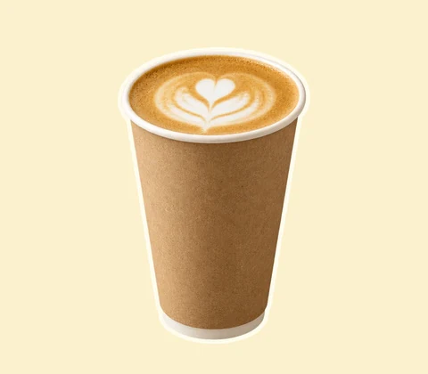
Hot cup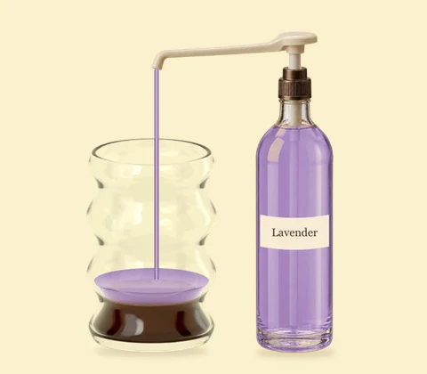
Second lavender pump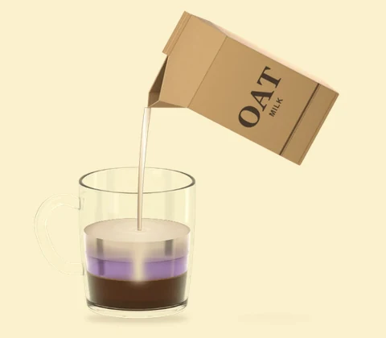
Oat milk pouring
From the counter to pickup.
Follow a customer order, or jump to the team’s milk queues, pickup tickets, and printed labels.
Screen 1 of 47 · At the counter
One recipe, two glasses.
The 18 cup states track selection, zero to six syrup pumps, and the milk pour. Compare the handled mug with the ribbed iced glass.
A lavender Mocha in five frames.
Two lavender pumps raise the liquid level. Oat milk reaches the drink before it blends; the settled frame is the reduced-motion reference.
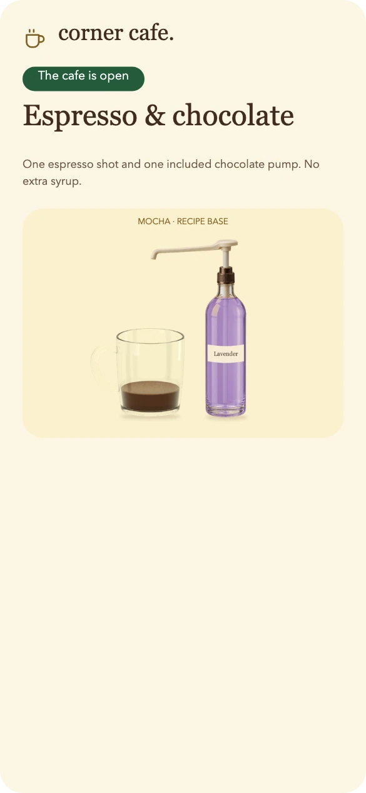
1. Espresso & chocolate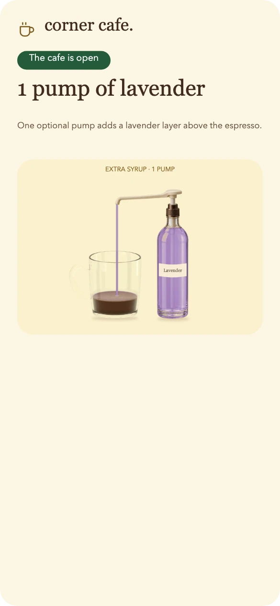
2. One lavender pump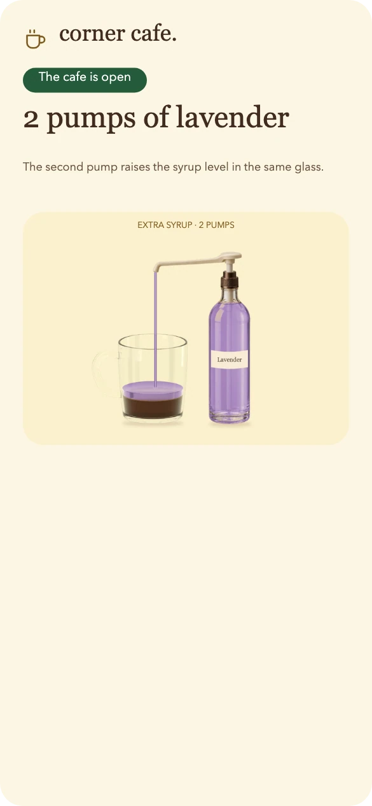
3. Two lavender pumps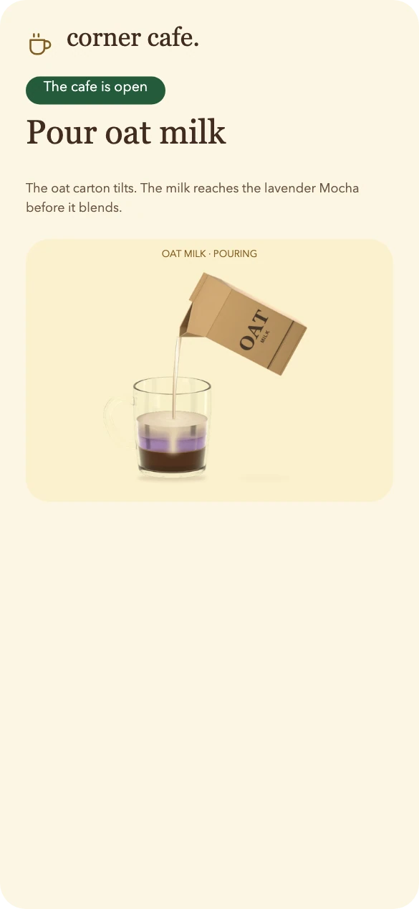
4. Pour oat milk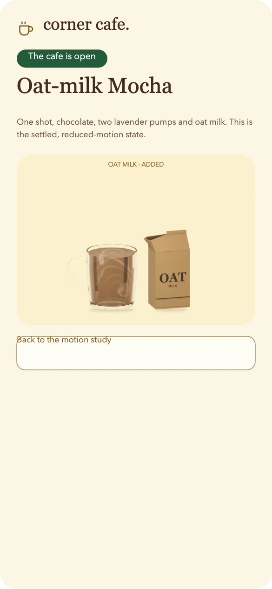
5. Oat-milk Mocha
A working prototype is not a measured outcome.
The next step is to observe service across multiple Sundays, collect the manual-workflow baseline, and test the proposed handoff with volunteers. No reduction in wait time has been established yet.
What confirms that a customer has arrived?
The PRD separates ordering from 9:00am–12:00pm and preparation beginning at 11:30am. The arrival signal and production gating still need definition and implementation. Earlier visibility must not become early preparation.
Before a pilot, I would also test printer failure, missed connections, role access, and the intended 48px touch-target and contrast rules across the actual screens.
The project is not just an ordering interface. It is a way to make a handoff clearer—and a reminder to keep the product’s promises separate from what a prototype has actually proved.